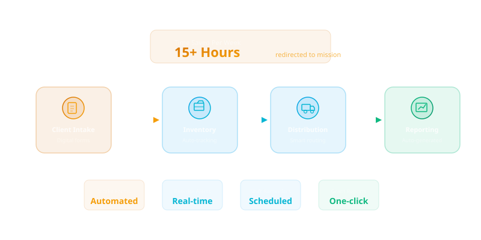

Every food bank has processes that consume hours of staff time but follow predictable patterns — intake forms that need processing, inventory that needs updating, distribution schedules that need coordinating, and reports that need generating. Workflow automation transforms these repetitive tasks into streamlined, consistent operations, freeing your team to focus on the work that truly requires human attention.
Automation is not about replacing people. It is about removing the friction that slows them down. When a volunteer coordinator no longer needs to manually send shift reminders to dozens of people, they can spend that time training new volunteers and building community partnerships. When intake data flows automatically into reporting systems, staff can focus on serving clients rather than entering data.

Step 1: Map Your Current Workflows
Before automating anything, you need a clear picture of how work currently flows through your organization. Start by documenting your core processes: client intake, food receiving and sorting, inventory management, distribution scheduling, donor acknowledgment, volunteer coordination, and reporting. For each process, identify who is involved, what triggers the work, what steps are required, and where bottlenecks occur.
This mapping exercise often reveals surprising insights. Many food banks discover that the same data is being entered into multiple systems, that approval chains are unnecessarily long, or that critical handoffs between teams happen informally through verbal communication or sticky notes. These are prime candidates for automation.
Step 2: Prioritize by Impact and Feasibility
Not every process should be automated at once. Prioritize workflows based on two factors: how much time they consume and how straightforward they are to automate. High-volume, rule-based tasks are ideal starting points. Donor acknowledgment emails, volunteer shift reminders, inventory reorder alerts, and standard report generation are all processes that follow clear rules and occur frequently.
Avoid starting with complex, exception-heavy processes. Client case management, for example, involves nuanced decisions that vary by individual circumstance. While technology can support case workers, the core decision-making should remain human. Start with the wins that build confidence and demonstrate value, then expand to more complex workflows.
Step 3: Automate Client Intake
The intake process is often the first interaction a client has with your organization, and it sets the tone for the entire experience. Digital intake forms — accessible via tablet at distribution sites or through a client portal — capture information once and route it automatically to the appropriate systems. New client registrations can trigger welcome communications, eligibility checks, and service referrals without manual intervention.
For returning clients, automation eliminates redundant data entry. A client's record is pulled up instantly, their visit is logged, and any changes to their circumstances are captured and updated across all connected systems. The result is shorter wait times, fewer errors, and a more dignified experience for every person who walks through the door.
Step 4: Streamline Inventory and Distribution
Inventory management is one of the most impactful areas for automation. When donations arrive, barcode scanning and automated receiving workflows can update inventory counts in real time, assign storage locations, and flag items approaching expiration. Distribution schedules can be generated automatically based on inventory levels, site capacity, and community demand patterns.
Automated alerts ensure that nothing falls through the cracks. When a particular food category drops below a threshold, purchasing staff receive a notification. When perishable items are approaching their use-by date, distribution sites are prioritized to move them quickly. This systematic approach reduces waste and ensures that the right food reaches the right communities at the right time.
Step 5: Automate Reporting and Compliance
Reporting is where automation delivers some of its most dramatic time savings. Instead of spending days at the end of each month compiling data from multiple sources into grant reports, automated systems can generate these reports on demand. Client visit counts, pounds distributed, demographic breakdowns, and outcome metrics are all aggregated automatically from operational data.
Compliance tracking becomes proactive rather than reactive. When a grant requires specific reporting at defined intervals, automated reminders ensure deadlines are never missed. When regulatory requirements change, workflow rules can be updated centrally and applied consistently across all operations.
Step 6: Build Feedback Loops
The final step is creating mechanisms to continuously improve your automated workflows. Track key metrics for each automated process: time saved, error rates, throughput, and user satisfaction. Review these metrics regularly and adjust workflows based on what the data reveals. Automation is not a set-and-forget endeavor — it is an ongoing practice of refinement.
Solicit feedback from the staff who use automated systems daily. They will identify edge cases, friction points, and opportunities for improvement that data alone cannot reveal. The most successful automation implementations are those that evolve based on real-world experience and changing organizational needs.
Workflow automation is not a luxury reserved for large, well-funded organizations. With the right approach — starting small, prioritizing impact, and building iteratively — any food bank can begin to reduce manual burden and operate more effectively. The time you save is time you can invest in your mission.